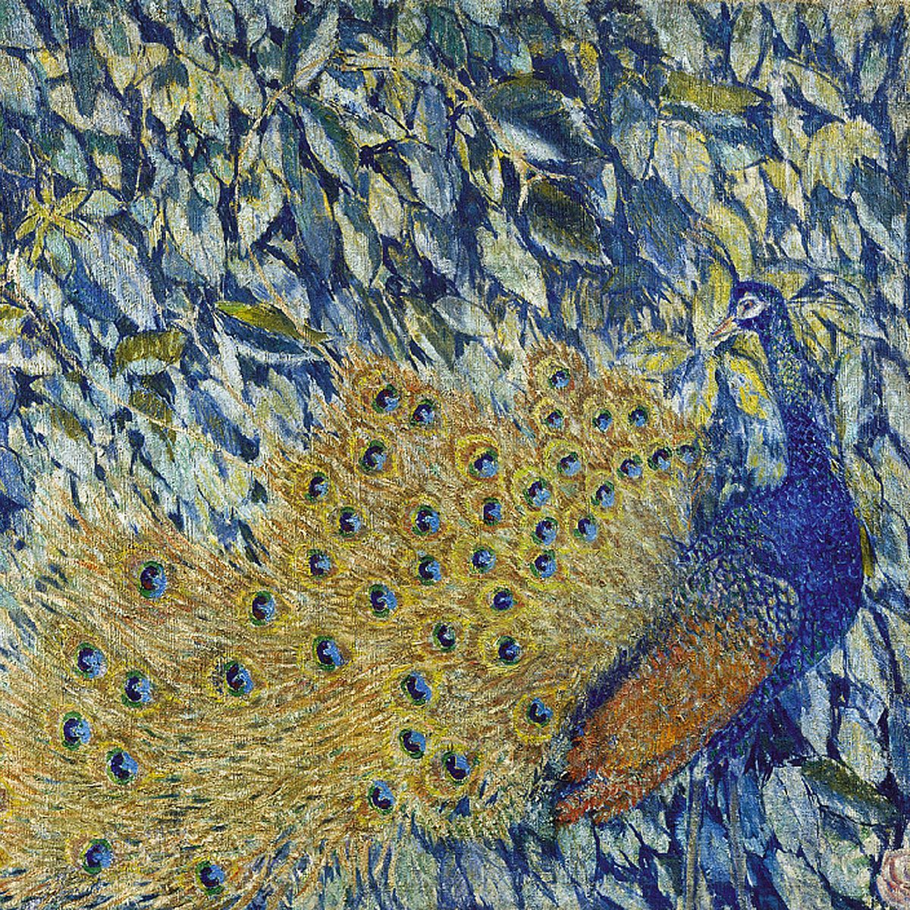
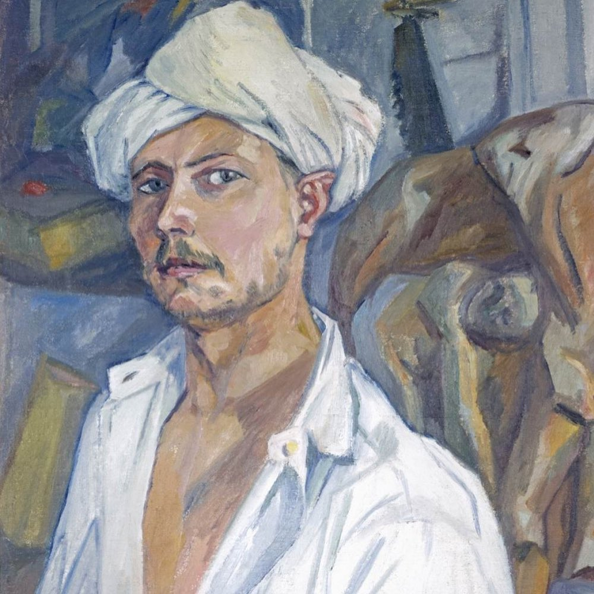
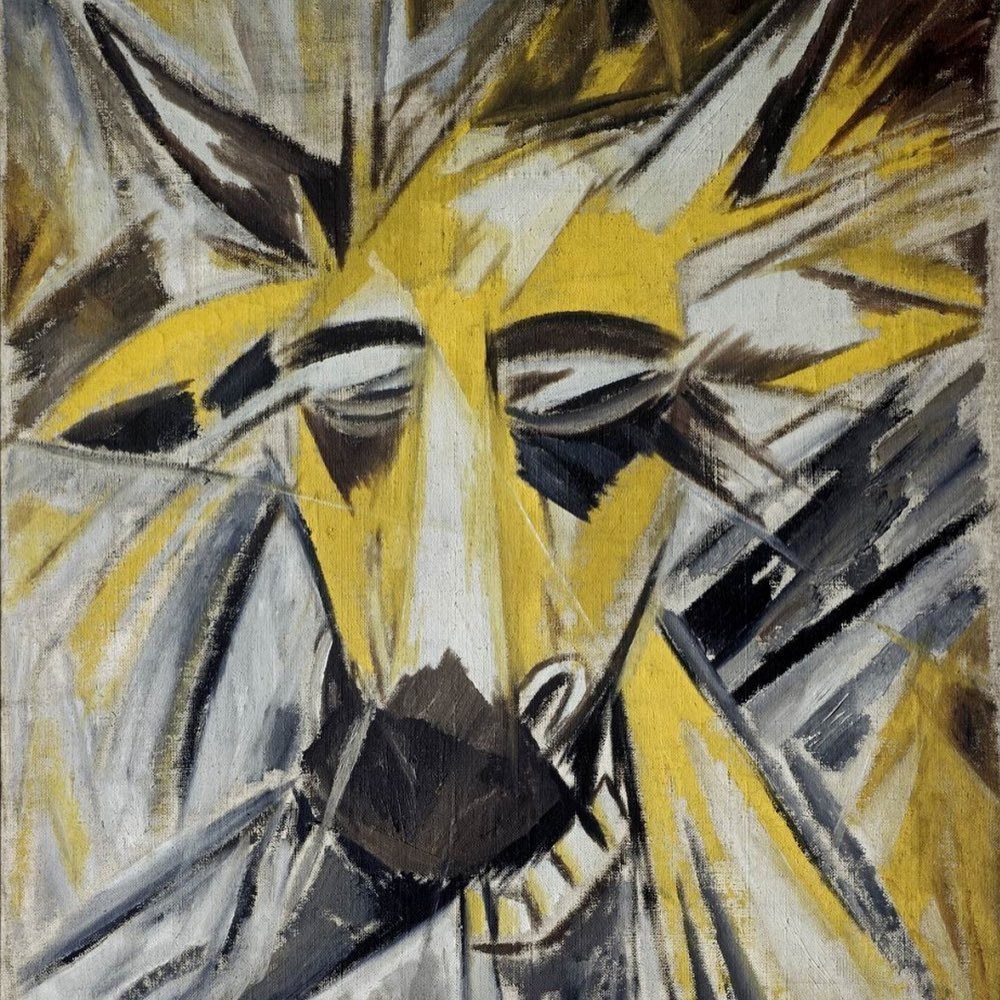
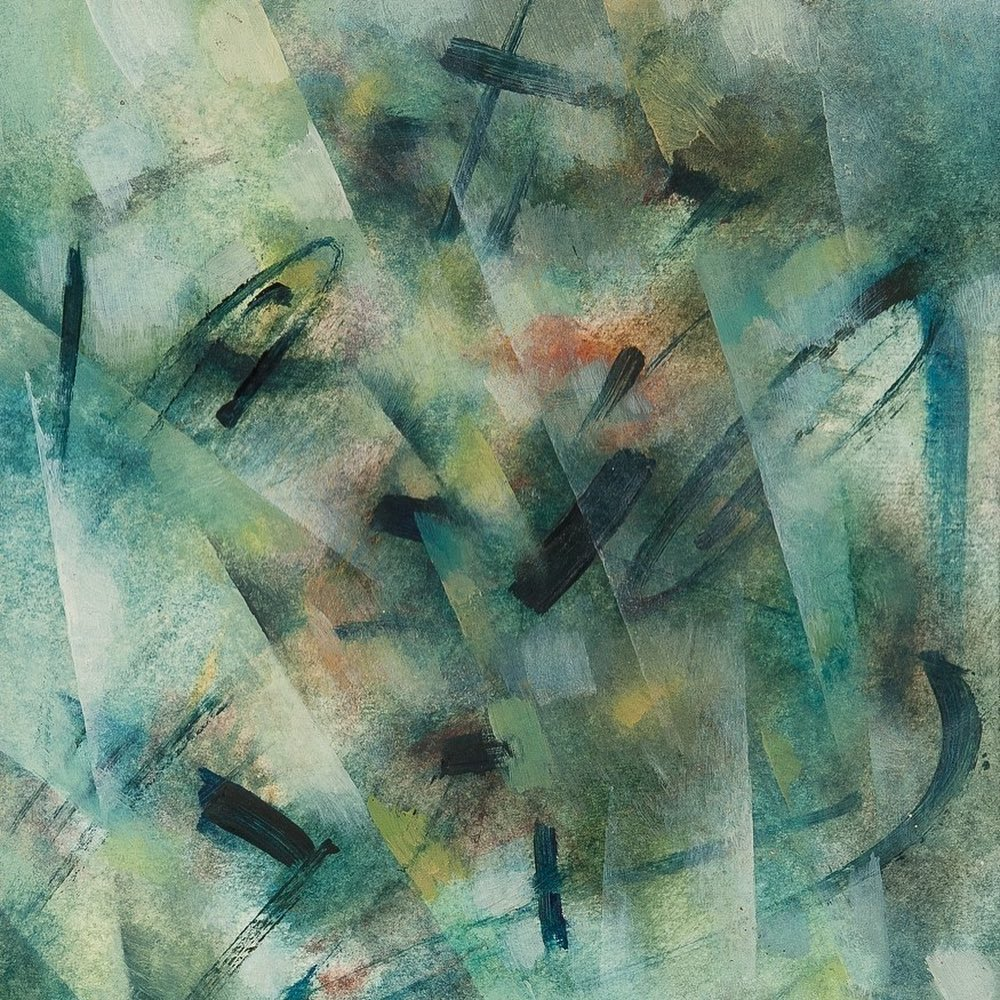
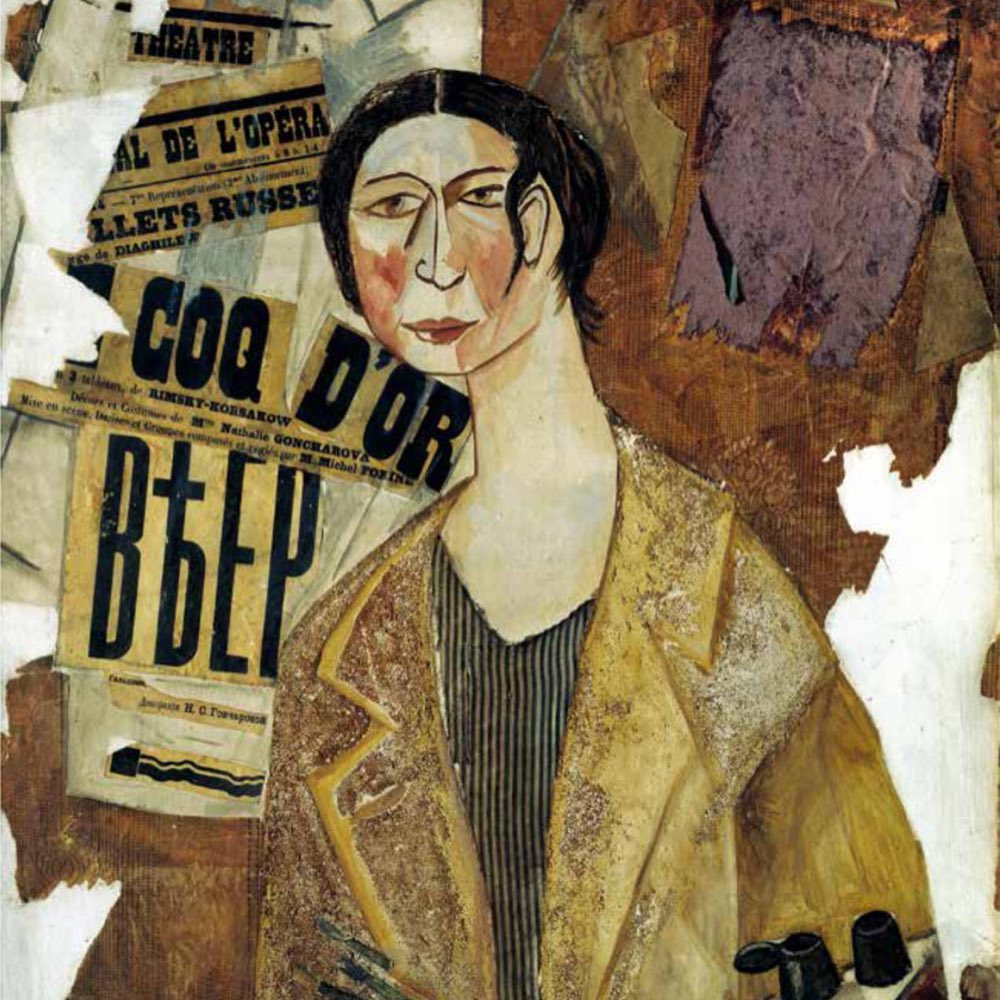
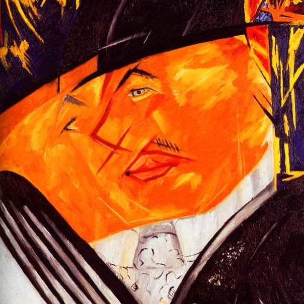
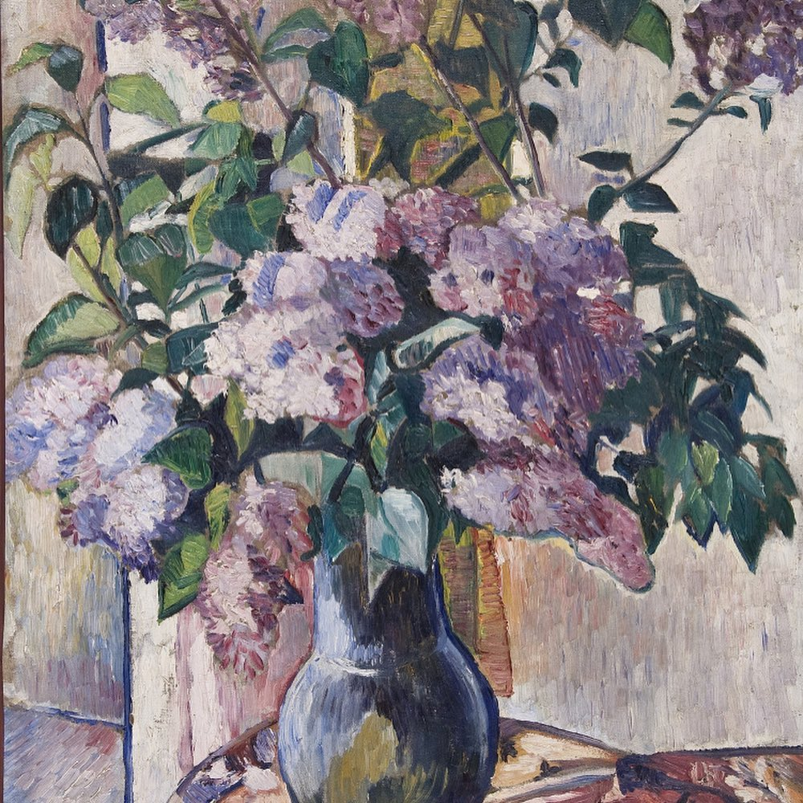
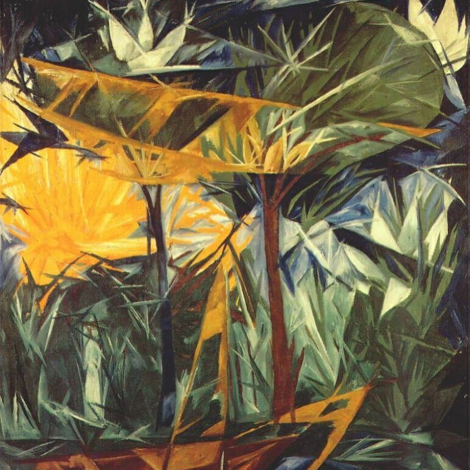
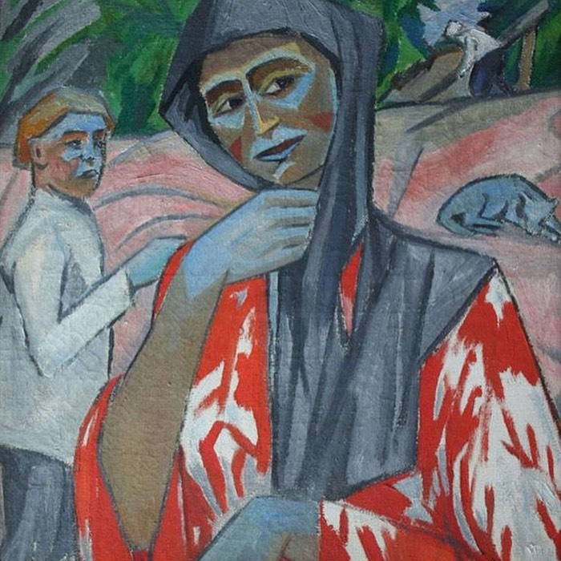
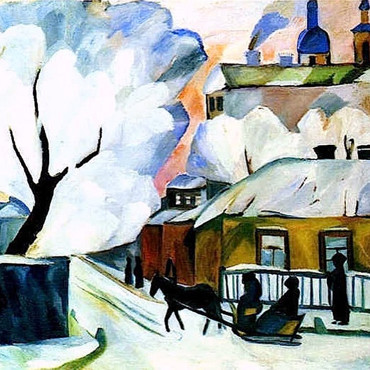

Часть первая
Познакомились они в московском училище живописи. Когда Ларионов увидел Наташу и ее работы с формой (она была ученицей скульптурного класса Павла Трубецкого) он ей сказал: «У вас глаза на цвет, а вы заняты формой. Раскройте глаза на собственные глаза». После этого она занялась живописью 😊.
Удивительное дело, они прожили вместе долгую жизнь, 60 лет, но никогда между ними не было творческого соперничества. Первая персональная выставка случилась именно у Гончаровой и организовал ее Ларионов. Когда в 1906 году Дягилев пригласил Ларионова в Париж на выставку русского искусства, молодой Ларионов заявил, что без Наташи не поедет… в итоге Гончарова стала художником балета «Золотой Петушок», который принес ей европейскую известность. Дягилев, естественно, начал зазывать Наталью Сергеевну работать над новыми спектаклями, но та согласилась только в 1915, после того, как пригласили и вернувшегося с фронта (после ранения) Ларионова.
Уехав, они в Россию так больше и не вернулись, прожив во Франции почти 50 лет. Ларионов увлекся балетом, не только как художник, но и как автор, организатор, как теоретик, историк и даже, как хореограф. Дягилев, например, практически ко всем своим будущим звездам-постановщикам на начальном этапе приставлял наставника - Ларионова, который не только фанатично любил балет, но и великолепно разбирался во всех тонкостях и обладал непревзойденным художественным чутьем.
Наталья Гончарова в отличие от увлекающегося Ларионова была спокойной и работоспособной. Она очень много писала, часто реализуя идеи Михаила, на которые у того просто не хватало времени или усидчивости. Если Ларионова всегда больше интересовали идеи и проекты, то Гончарову - живопись. Михаил придумывал манифесты, организовывал движения и союзы, создавал концепции, а Наташа… рисовала 😊. В 1912-13 Ларионов изобретает лучизм, новое направление в искусстве, утверждающее (вслед за открытиями науки начала века), что все в мире пронизано невидимой лучистой энергией, а все предметы - суть просто сгустки, пересечения таких лучей. А Наташа… впрочем, это уже другая история 😊




















Часть вторая
Дягилев... Как часто для других людей этот человек становился синонимом глобальных жизненных перемен? Да почти всегда. Вот уж кто был гением, и добрым, и злым. Гении обычно не терпят вокруг себя других талантов, но только не Дягилев. Он можно сказать коллекционировал их 😊.
Взбаламутив художественную среду традиционной России, организовав целую кучу движений, союзов и выставок, Ларионов и Гончарова по приглашению Сергея Дягилева в самый разгар войны уезжают из России для работы над новой постановкой Русских Сезонов. Тех самых сезонов, которые перевернули представление Европы о балете, о русском искусстве и об искусстве вообще. Долгие годы Михаил Ларионов и Наталья Гончарова отдали сотрудничеству с балетом и театром... Ларионов, так пожалуй, и все свои 50 европейских лет. Когда они оставили этот мир, их архив содержал почти 12000 живописных и графических работ, более 10000 книг и журналов и огромное количество текстов и документов. И значительная часть была посвящена балету.
По завещанию художников вся эта коллекция была унаследована Александрой Томилиной, многолетней любовницей и помощницей Ларионова (история их странных взаимоотношений отдельная тема, да и какая нам собственно разница).
Но не просто так, а для передачи в дар родной стране, СССР. И как водится, вопрос владения такой ценностью - очередной детектив. Томилина сохранила архив и уже в 80-е, когда это стало возможно, практически перед смертью выполнила волю Ларионова и Гончаровой. Правда из-за большого налога на наследство советские чиновники решили сэкономить и часть коллекции вывезти нелегально.
В итоге, в дело включилась масса мутных личностей, а судебные процессы длятся до сих пор. В качестве отступного за «косяки» пришлось отдать музею Помпиду более 60 ключевых картин. А ещё подписать условие о создании в рамках Третьяковки отдельного музея Ларионова и Гончаровой... что, кстати так до сих пор и не сделано.
Но так или иначе, наследие наших авангардистов вернулось на родину, пусть и не всё. И я надеюсь, что когда-нибудь и их музей тоже распахнёт для нас свои двери.